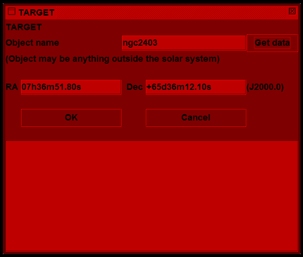
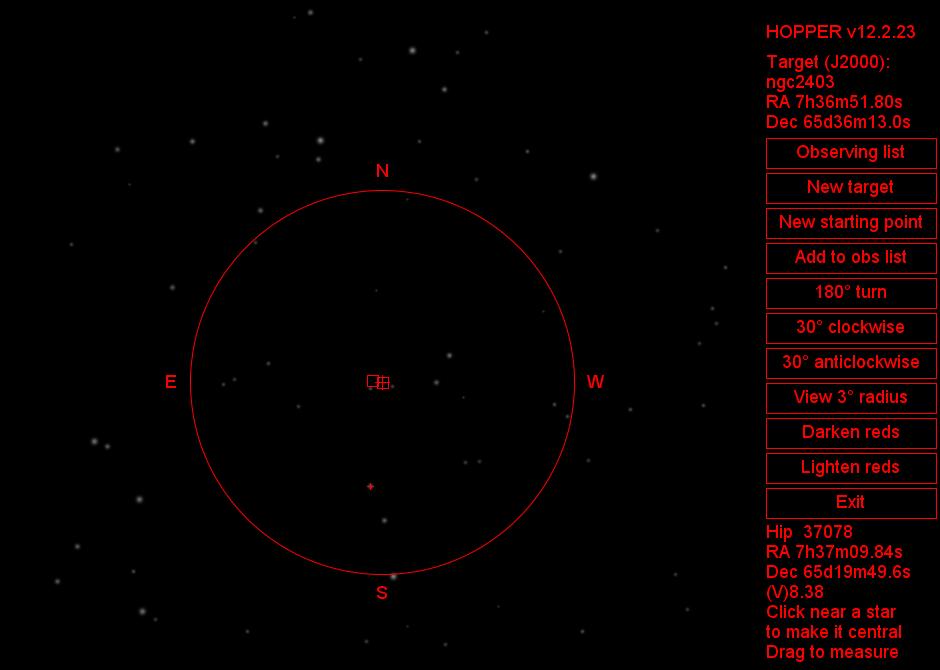
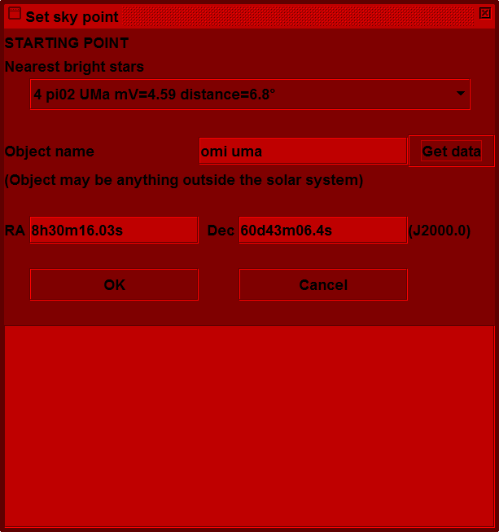
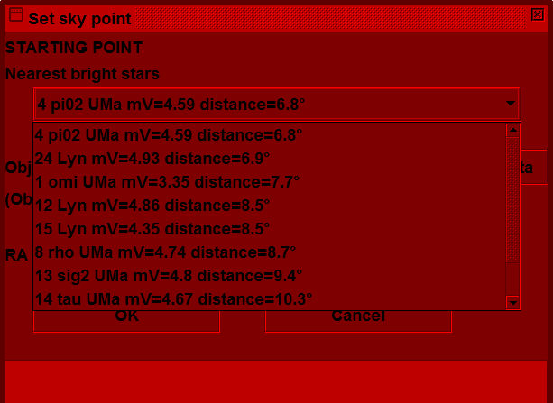
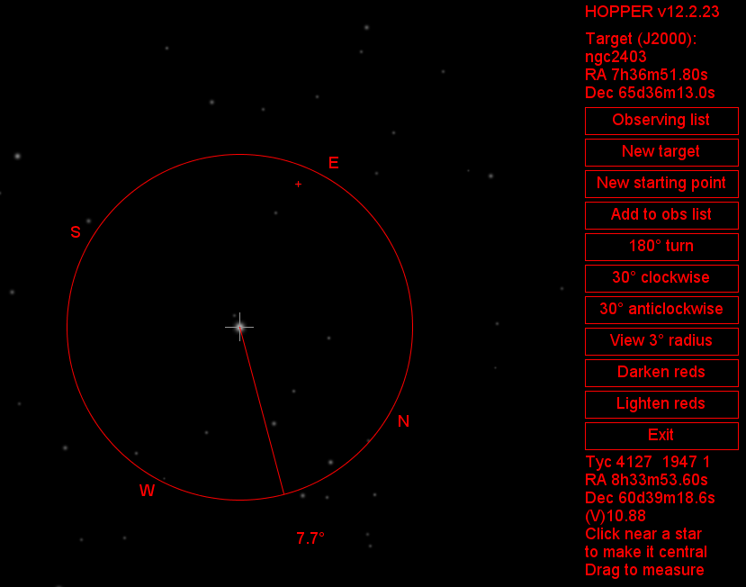
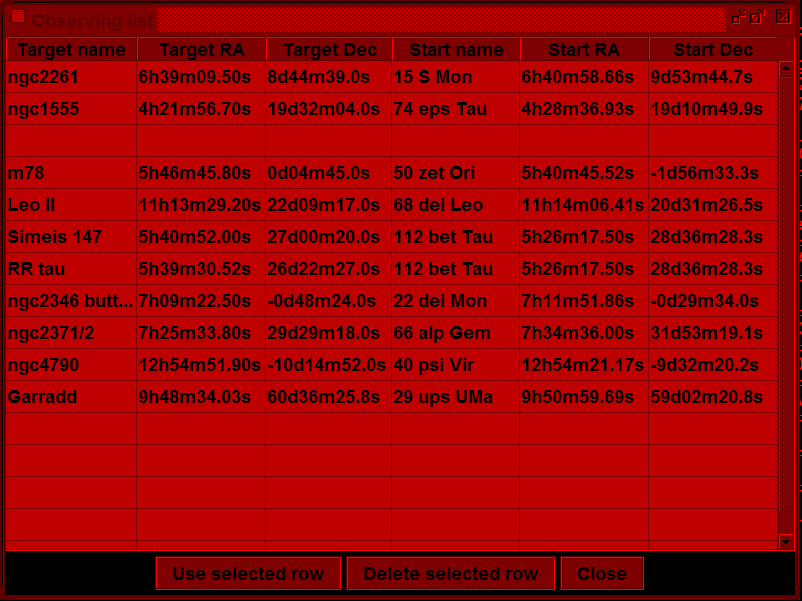

Hopper - finding targets at the telescope
Hopper assists observers to find faint objects by navigating (star-hopping) from an easily found starting point, typically a naked-eye star. It is designed for night use by presenting a very dark, mostly red, full screen. Thus the observer's eyes remain dark-adapted for both viewing through the telescope and looking at the computer screen.
Hopper is a stand-alone application. It is written purely in Java. That means it will run on most personal computer platforms (Linux, MacOS, Windows, etc). It can be used conveniently on a laptop at the telescope. It can use an internet connection for finding the positions of obscure objects but does not require any such connection in order to run. It does not matter if there is no Internet available from your observing site.
Download Hopper as a zip file (15 Mbytes) from the BAA server. After unzipping, installation instructions can be seen in the file ReadMe.txt. Hopper requires Java version 7 (or later), so if it does not run, go to www.java.com to get the latest JRE (Java Run-time Environment). We have heard of cases where Hopper appears to start running and then stops. This turned out to be because the user's installed version of Java was earlier than 7. It is essential to make sure that you have JRE version 7 or later.
When Hopper starts it loads data for more than a million stars down to magnitude 12 and over 13,000 deep sky objects (the entire Messier, NGC & IC lists). The data are organised in a special way for real-time speed when plotting on the screen.
Hopper first displays its main window which completely covers the screen and is mainly black, masking the desk-top and all other windows. It then presents a dialogue for setting a target position.
If the coordinates of the target object are known they can be typed into the RA and Dec fields. Any reasonable format can be used (eg, sexagesimal with or without unit separators, or decimal hours/degrees) and Hopper will interpret it. If the coordinates are unknown the name of the object may be typed in the top field and the "Get data" button clicked. If the object is then found in the loaded data its coordinates appear in the RA and Dec fields (in the standard format shown in the picture above). If the object is not found and the computer is connected to the Internet the user will be asked whether to try finding the object online (using Simbad at the University of Strasbourg). If the object is then found its coordinates go in the fields as before and also the complete response (a VOTABLE) from Simbad is shown in the text area at the bottom, so the user can verify what was found.
Clicking the OK button closes the dialogue and shows a view similar to that seen through a low power eyepiece on the telescope, with the target object centred. Stars are shown as realistically as possible at their different magnitudes; going down to magnitude 12 they match pretty well what can be seen in a 10"(250mm) aperture f/4.8 Newtonian with a 40mm eyepiece. Deep sky objects are shown by small red squares. In the pictured example below there are two adjacent NGC objects: 2403 and 2404. The target object has a red cross over it.
This is the main window, covering the whole screen. As the mouse moves over it the nearest star is highlighted with a small red cross (the star below the target in this example) and its data are listed in the bottom right hand corner. Clicking near a star moves it to the centre but we are not ready for that yet.
The red circle has a radius of 1 degree. One of the buttons on the right toggles between this and a wider 3 degree view (more like a finder scope).
The view is rotatable. If you have ever looked through a telescope on an equatorial mount, particularly a Newtonian, where one stands at the side, you will know that it is not obvious which direction is north in the view. So buttons on the right rotate the view to match the star pattern you really see. There are 30 degree increments or a half turn. There is also a button for lateral inversion, for telescopes using a diagonal in front of the eyepiece.
The next important step is to define a starting position, generally a naked eye star, easy to find, not many degrees away from the target.
In our example the target is a galaxy in Camelopardalis, quite a long way from any bright star. Perhaps that is why this galaxy is rarely seen in photos, but it is quite a good one for amateurs to photograph:
Canon EOS 5D MkII ISO6400 54x32s
254mm Newtonian f=1200mm f/4.8
HEQ5 equatorial mount, driven but not guided
2012 Jan 23 19:38:34-20:15:01 UT
A possible starting star is Omicron Ursae Majoris (magnitude 3.35). So we click the "New starting point" button to get the position dialogue again, this time for a starting point:
The first three letters of the Bayer letter name and the IAU constellation abbreviation are needed to identify the star. Letter case does not matter, so just type "omi uma" and click "Get data". The OK button would then lead to the view from the starting point (see below).
However, Hopper has another trick up its sleeve. In preparing the New Starting Point dialogue it found the 8 nearest stars brighter than magnitude 5 for us automatically. The screen shot above shows that π2 UMa is slightly closer to our target. However it is fainter, so perhaps harder to locate in the finder scope. Never mind, it is only the first entry in a drop-down list which does include ο UMa:
So it is only necessary to click on one of the stars in the list in order to proceed to the view of the starting point:
Notice that the view has been rotated as described earlier. The starting star is centred and now there is a line showing the direction to the target. It is 7.7 degrees away.
The observer can then operate the drive controls on the telescope to move the eyepiece view in that direction. While doing that, clicking with the mouse (or touch-pad on a laptop) near a star which has been moved to the centre of the view, brings that star to the centre of Hopper's display, updating the direction and distance indicators. By repeating this it is quite simple to drive the telescope to the target.
The faintest of targets can be lined up for photography by reference to surrounding stars, even if the target cannot be seen at all by eye.
There are other features, notably an observing list. This is a table that can be set up before the observing session (or during it, if necessary) and target/starting point pairs selected from it when required, rather than entering positions at observing time.
This list is held on disc as a comma-separated value (CSV) file so it may, with care, also be edited in a text editor or a spreadsheet. Such applications are not dark-adapted of course.
Another feature is that by dragging the mouse between 2 stars a display of the relative PA and separation of those stars can be obtained. That enables a scale and orientation to be calculated for any photograph of the target.
Making Hopper dark-adapted (all windows, buttons, etc, in shades of red) was done by using the Pluggable Look-And-Feel capabilities of Java. Details of how that was done appeared in the BAA Instruments and Imaging Section's Technical Tips No. 3, 2012 February 20.
Hopper.jar provides an API for Java programmers wishing to go further. The API documentation (Javadoc) is provided for them. We would like to hear about such developments and maybe we could refer to them on this site - please contact Steve Harvey.